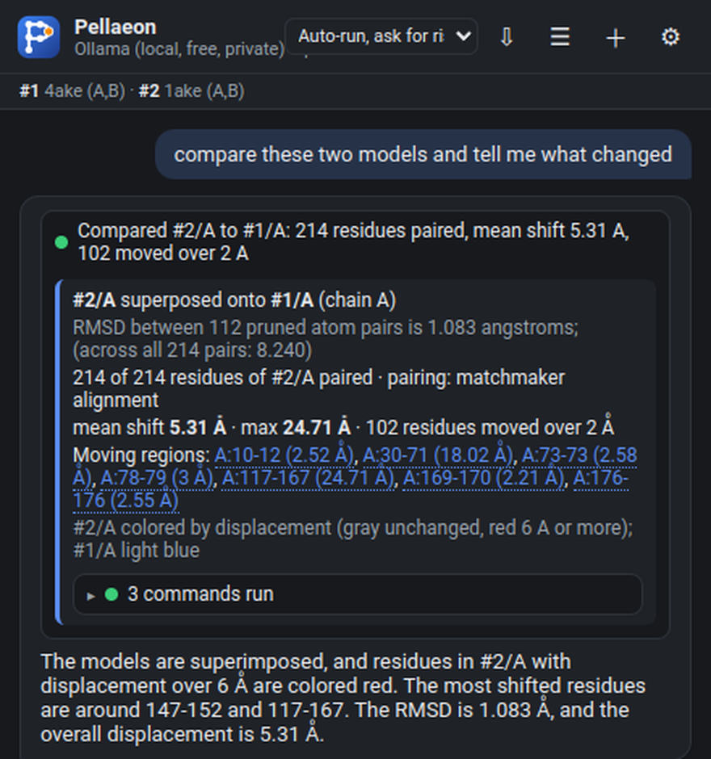
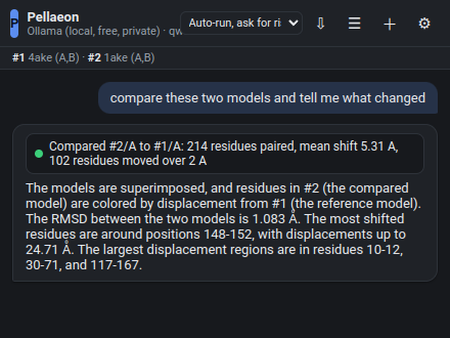
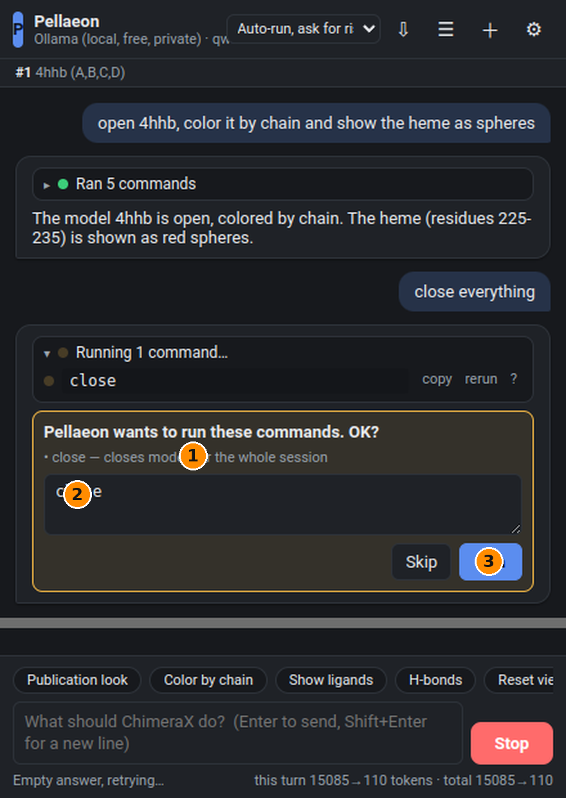

Talk to ChimeraX in plain English.
Pellaeon is a chat panel inside UCSF ChimeraX. Describe what you want; it runs the commands, shows every one of them, fixes its own mistakes and asks before doing anything risky.
open https://github.com/pellaeon-chimerax/pellaeon/releases/latest/download/install_pellaeon.py
Paste that into ChimeraX's command line. That is the whole installation. Details, offline install and the classic Chimera edition.

Say it like you would say it to a colleague
Typos, shorthand and "it" / "these" are fine: Pellaeon looks at what is open and selected.
What you get
Every command, visible
Each reply shows the exact ChimeraX commands it ran, with copy, re-run and a link to ChimeraX's own documentation for that command. Export a whole chat as a replayable .cxc script.
Risky things ask first
Closing models, deleting atoms, saving files and running scripts show an editable confirmation card. Everything else just happens.
Local or cloud AI, your choice
Ollama on your own machine (free, private), Google Gemini's free tier, Claude, OpenAI, or any OpenAI-compatible server. Switch any time.
It knows your ChimeraX
The documentation of the exact ChimeraX version you run is indexed on first launch, plus 130 tutorial workflows and 58 community recipes.
Click to ask
Select a residue in the 3D view and ask "what is this?", "what is nearby?", or highlight it. Alt+click works too.
Compare and annotate
"What changed between these two?" superposes and colors by displacement using MatchMaker's own alignment. "Show the disease variants" pulls UniProt or ClinVar, maps them onto the right chain with the right numbering, colors and labels.
Two editions
ChimeraX edition
A native ChimeraX bundle: one line to install, docked panel, full session awareness. Windows, macOS, Linux.
Classic edition
For the old UCSF Chimera 1.x: a small program with a launcher window and the same panel in your browser, driving Chimera through its REST server. How it works.
Screens

The panel docks on the right of ChimeraX; the 3D view stays where it always was.

Comparison: RMSD, coverage, moving regions you can click.

A risky command asks first, and the commands are editable.

Choose an AI once; local Ollama, free Gemini, Claude, OpenAI.
Privacy, briefly
With Ollama the model runs on your computer. Requests, the list of open models and the selection are sent only to the provider you choose. Gene and variant lookups go to UniProt and ClinVar when you ask for them. API keys are stored privately on your machine, never inside ChimeraX sessions.